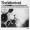
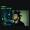
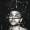
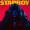

The Weeknd/Abel Tesfaye born on February 16, 1990, in Toronto, Canada, has become a defining figure in contemporary music, known for his unique fusion of R&B, pop, and electronic sounds. He first gained attention in 2010 with a series of mixtapes, including "House of Balloons,"  which showcased his haunting falsetto and introspective lyrics. These early works established a distinctive aesthetic marked by themes of love, heartbreak, and the darker sides of fame. His breakthrough came with the release of his debut studio album, "Kiss Land,"  in 2013, but it was his sophomore album, "Beauty Behind the Madness,"  in 2015, that launched him into mainstream success. Featuring hits like "Can't Feel My Face" and "The Hills," the album highlighted his ability to blend catchy melodies with deeper emotional narratives, earning him multiple awards and solidifying his status in the music industry.
In 2016, The Weeknd released "Starboy,"  further showcasing his evolution as an artist with collaborations like the title track featuring Daft Punk. This album explored themes of self-identity and the complexities of fame, resonating with a broad audience. His 2018 project, "My Dear Melancholy," marked a return to his darker, more introspective roots, drawing on personal experiences, including his high-profile breakup with Selena Gomez. The Weeknd continued to achieve monumental success with his 2020 album, "After Hours," which featured the record-breaking hit "Blinding Lights." This track, infused with an 80s synth-pop sound, became one of the most successful songs of all time, demonstrating his ability to adapt and innovate within the music landscape.
Beyond his music, The Weeknd is recognized for his striking visual style, evident in his music videos and live performances that often incorporate surreal elements and a cinematic quality. His influence extends beyond entertainment; he has used his platform to address mental health issues and support social causes, making significant contributions to various charities. With his artistic vision and willingness to experiment with different genres and themes, The Weeknd continues to push boundaries in the music industry, inspiring a new generation of artists while remaining deeply connected to the emotional experiences that shape his work.
The Weeknd
Blinding lights click to play
The weeknd-starboy (feat daft punk) Official music video
.jpg) marked a return to his darker, more introspective roots, drawing on personal experiences, including his high-profile breakup with Selena Gomez. The Weeknd continued to achieve monumental success with his 2020 album, "After Hours,"
marked a return to his darker, more introspective roots, drawing on personal experiences, including his high-profile breakup with Selena Gomez. The Weeknd continued to achieve monumental success with his 2020 album, "After Hours," .jpg) which featured the record-breaking hit "Blinding Lights."
which featured the record-breaking hit "Blinding Lights."